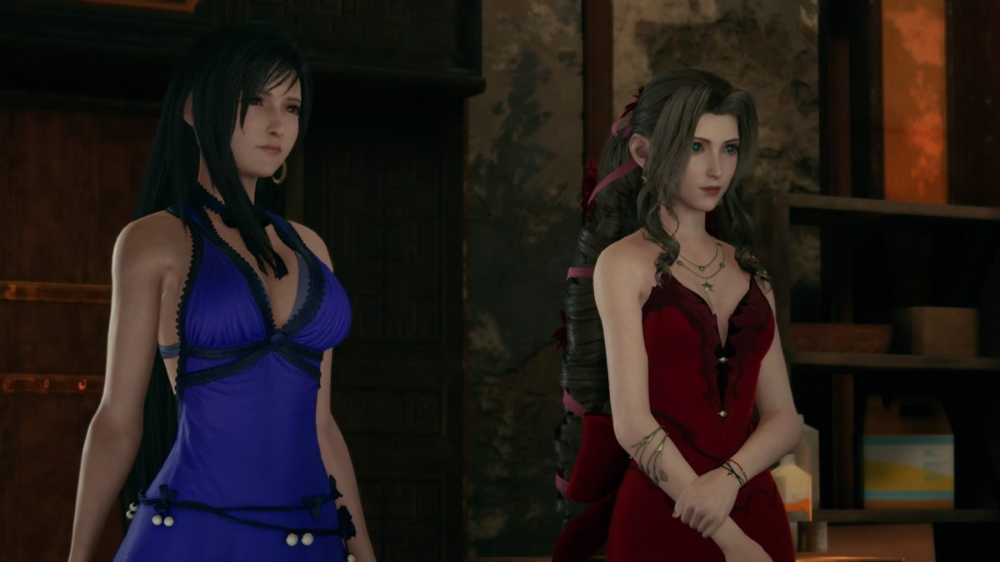

El productor de Final Fantasy 7 Remake quería más cambios Yoshinori Kitase, productor de Final Fantasy VII Remake, ha reconocido que quería que este remake tuviera más cambios con respecto a la trama original de los que ha acabado teniendo. Leer más
No habrá censura en Final Fantasy VII Remake  Violencia, alcohol e incluso vestimenta sugerente para los personajes femeninos. Así es como clasifica Final Fantasy VII Remake la ESRB, que con su descripción ha revelado detalles muy interesantes del esperado —y cada vez más cercano— remake. Por ejemplo, dejando claro que Square Enix no se va a cortar ni un pelo a la hora de reimaginar al mítico Don Coreno. Probablemente, con baile "sexy" incluido. Leer más
Noticia número 3 Las invocaciones funcionan en Final Fantasy VII Remake de manera distinta al original porque el sistema de combate mezcla la acción en tiempo real con los turnos, y porque desde Square Enix querían que estas criaturas mitológicas tuvieran un papel más importante en la batalla. Naoki Hamaguchi, codirector del título, explica en el PlayStation Blog el proceso de pensamiento que llevó a que las invocaciones acabaran siendo tal y como las conocemos, y habla también de alguna descartada. Leer más